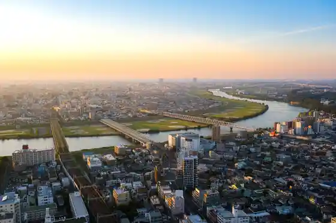
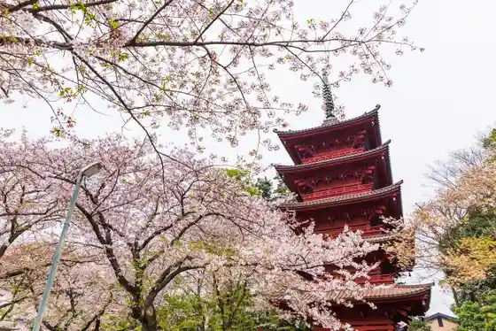
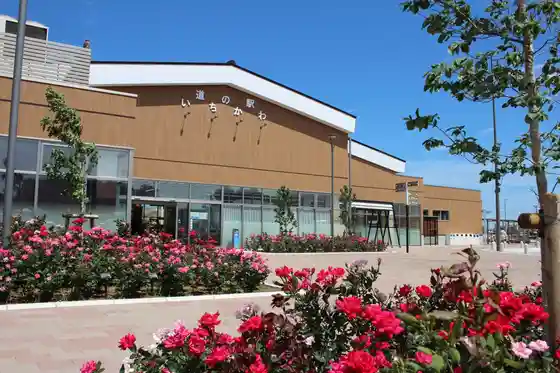
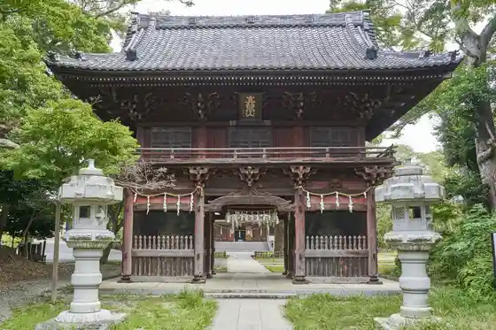

Ichikawa Do Botanical Garden
Ichikawa, Chiba · 047-338-1960 · Official / source link
Ai Rinkutaun Tembo Shisetsu
Ichikawa, Chiba · 047-322-9300 · Official / source link

Nichiren Munehiro Honzan Nakayama Hokekyo Tera
Ichikawa, Chiba · 047-334-3433 · Official / source link

Roadside Station
Ichikawa, Chiba · 047-382-5211 · Official / source link

Mama Yama Hironori Tera
Ichikawa, Chiba · 047-371-2242 · Official / source link

Satomi Park
Ichikawa, Chiba · 047-372-0062 · Official / source link
Katsushika Hachiman Shrine
Ichikawa, Chiba · 047-332-4488 · Official / source link
Chiba Prefectural Gendai Sangyo Science Museum
Ichikawa, Chiba · 047-379-2000 · Official / source link
Ichikawa Higashiyama Kaii Memorial Museum
Ichikawa, Chiba · 047-333-2011 · Official / source link
City Ichikawa History Museum
Ichikawa, Chiba · 047-373-6351 · Official / source link
Kozuka Yama Fiirudoasurechikku
Ichikawa, Chiba · 047-371-6299 · Official / source link
Kisetsu no Hana (Bara) / Ichikawa Do Botanical Garden
Ichikawa, Chiba · Official / source link
Shirahata Ten Shrine
Ichikawa, Chiba · 047-322-1798 · Official / source link
Ichikawa Yukinori Fureai Densho Kan
Ichikawa, Chiba · 047-314-8177 · Official / source link
City Ichikawa Koko Museum
Ichikawa, Chiba · 047-373-2202 · Official / source link
Ichikawa Yukinori Yacho Kansatsu Sha (Ainesuto)
Ichikawa, Chiba · 047-702-8045 · Official / source link
Manyo Botanical Garden
Ichikawa, Chiba · 047-337-9866 · Official / source link
Yukinori Shinyo Museum
Ichikawa, Chiba · 047-357-2061 · Official / source link
City Ichikawa Nature Museum
Ichikawa, Chiba · 047-339-0477 · Official / source link
Yoshizawa Garden Gyararii
Ichikawa, Chiba · 047-374-7687 · Official / source link
Ks Garden Lab.
Ichikawa, Chiba · 047-703-7641 · Official / source link